Differenza tra congestione 🌐 e controllo di flusso 🌊📶
- Controllo di flusso
- esso indica quando abbiamo un mittente che manda troppi pacchetti velocemente
- congestione 🌐
- quando n mittenti trasmettono tutto troppo velocemente è un problema importantissimo del networking perché causa:
- ritardi
- perdita di pacchetti
Casistiche di congestione 🌐
Scenario 1 🔵
- abbiamo buffer illimitati
- capacità di collegamento R
- la massima quantità di dati (in bit al secondo) che un collegamento può trasportare
- due flussi di comunicazione
- nessuna ritrasmissione 🔁
- niente errori
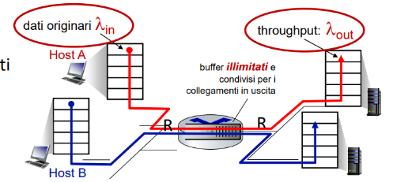 il tutto ovviamente è così perfetto da risultare lineare
visto che il router e il collegamento è condiviso tra due insiemi di host
appena si supera R/2 il collegamento subisce dei rallentamenti causando congestione 🌐 ovviamente visto che e escono in modo 1:1 appena superano R/2 accade quanto detto 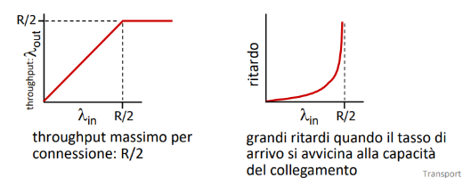
Scenario 2 🟢
abbiamo sempre
- un router però stavolta
- buffer finiti
- la possibilità che alcuni pacchetti debbano essere ritrasmessi
- quando il buffer è pieno Aggiungiamo inoltre una differenza tra
- input del livello di applicazione
- non include le ritrasmissioni
- input del livello di trasporto
- include le ritrasmissioni
- viene anche chiamato carico offerto alla rete così facendo possiamo prendere per ovvio che 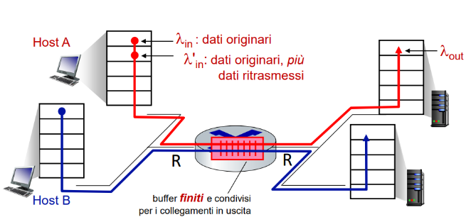 Prendiamo una situazione ancora perfetta:
- il mittente sa se il buffer del router è pieno oppure no
- procede a inviare solo quando si può
- non viene generata congestione 🌐 input=troughput fino a R/2 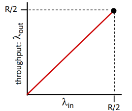 Prendiamo una situazione meno perfetta:
- i pacchetti possono essere scartati dal router quando il suo buffer è pieno
- il mittente però sa quando ciò accade quindi lo ritrasmette 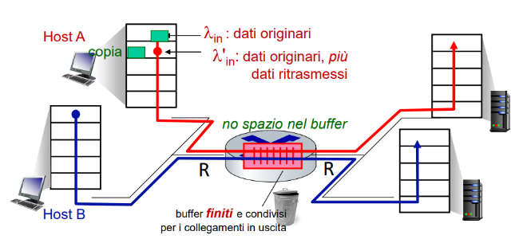 in questo caso si perde un po di troughput 📉 rispetto all’input 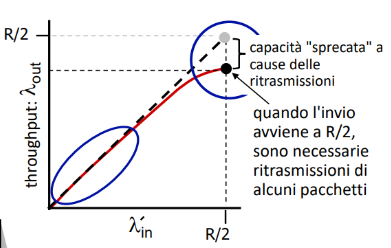 Prendiamo una situazione realistica
- i pacchetti vengono persi e scartati dal router
- causa: buffer pieni 📛
- è richiesta una ritrasmissione 🔁 se il mittente invia un pacchetto ma a causa della congestione 🌐 esso è rallentato 🐢
- allora quello che succede è che l’ACK 📬 che il mittente attendeva arriverà in ritardo
- il mittente pensa che il pacchetto sia perso quindi entra in timeout ⏱️per l’ACK 📬 non ricevuto
- rimanda il pacchetto
- sostanzialmente invia due copie uguali al destinatario
- timeout ⏱️ (prematuro perché non sa della congestione 🌐) 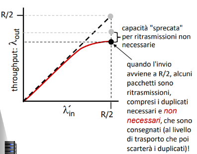 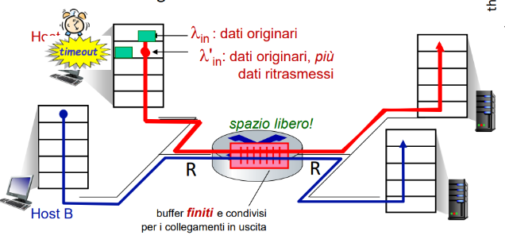
- il troughput è ridotto perché abbiamo più lavoro inutile
Scenario 3 🟣
- abbiamo 4 mittenti
- percorsi multi- hop
- Un percorso multi-hop è un tragitto in rete in cui i dati devono attraversare più di un router o nodo intermedio per arrivare a destinazione.
- è presente sia timeout ⏱️ che ritrasmissione 🔁 Leggi la domanda e la risposta sotto: 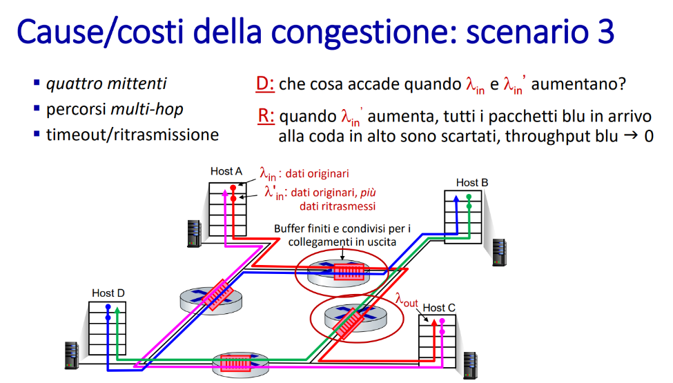
- Perché vengono scartati? i pacchetti blu?
- sostanzialmente vengono scartati perché quelli rossi arrivano prima di quelli blu e quindi si prendono tutta la banda
- quelli rossi subiscono la congestione 🌐 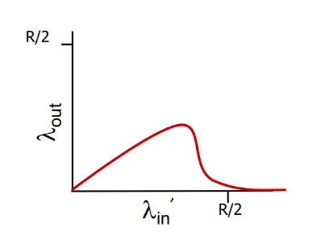
- quando abbiamo una congestione 🌐 i collegamenti upstream sono limitati e quindi stiamo sprecando la loro capacità trasmissiva
- in questo grafico si può vedere come sia tutto altalenante
Riassunto sui vari grafici 📊
| Descrizione | Grafico a destra |
|---|---|
| 🔸 Il throughput non può mai superare la capacità. | 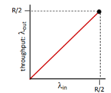 |
| 🔸 Il ritardo aumenta mentre ci si avvicina alla capacità. | 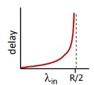 |
| 🔸 La perdita/ritrasmissione 🔁 diminuisce il throughput effettivo. | 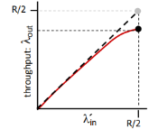 |
| 🔸 I duplicati non necessari 🗑️ diminuiscono ulteriormente il throughput effettivo. | 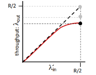 |
| 🔸 Capacità a monte/buffer sprecati per pacchetti persi a valle. | 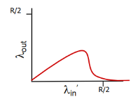 |
Come controllare la congestione 🌐🧠🌐
network assisted
Senza l’aiuto della rete(metodo che usa TCP)
- i dispositivi che si scambiano le info devono dedurre ciò che accade
- attraverso il ritardo e le perdite dei pacchetti 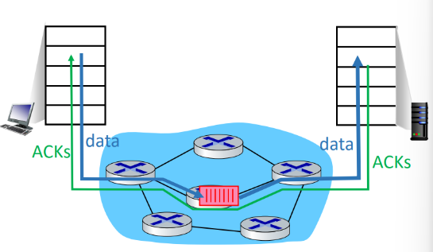 Con l’aiuto della rete
- per capirlo fa come il dottore, vede i sintomi
- i router forniscono un feedback diretto all’host
- attraverso un pacchetto chiamato chokepacket
- lo avvisa dello stato di congestione 🌐
- un router marca i pacchetti dicendo il suo stato di congestione 🌐
- in modo che poi il destinatario li legga e informi il mittente della situazione
- servono non solo per indicare cause di congestione 🌐 ma anche solo impostare dei tassi a cui inviare i pacchetti viene usato nei protocolli
- TCP ECN
- ATM
- DECbit
Recuppino di trasmissione dati affidabile e controllo della congestione 📊🌐 🌐 🔁📡
- trasmissione dati affidabile
- Una trasmissione dati affidabile consente di ridurre la perdita 📉 e la corruzione dei pacchetti
- queste cose possono essere causate dalla congestione 🌐
- controllo congestione 🌐
- Avere un controllo della congestione 📊🌐 🌐 ci consente di risolverla o comunque di ridurla notevolmente
- evita il “collasso di congestione 🌐“
- Avere un controllo della congestione 📊🌐 🌐 ci consente di risolverla o comunque di ridurla notevolmente
Cambiamenti del TCP 🔧
- in origine aveva un controllo di congestione 🌐 end-to-end
- ora ci sono delle versioni più recenti che consentono
- di avere esplicitamente dalla rete le info sulla congestione 🌐
come avere controllo sulla congestione end-to-end 🌐 📈?
per farlo si definisce un tasso di invio ovvero:
- quanti byte al secondo posso spedire?
- per saperlo si utilizza la finestra della congestione 🌐 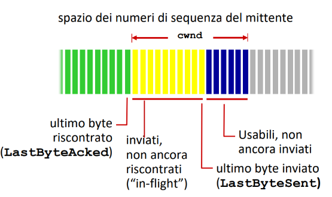
- In questa foto ci interessa in particolare la cwnd congestion window
- che viene regolata dinamicamente in base allo stato di congestione 🌐 della rete il tasso di invio viene calcolato dalla seguente formula
- ogni volta che vengono inviati i byte della finestra cwnd
- si attende anche l’RTT quindi si dimezzano
- ovviamente il mittente limita la trasmissione dei dati che saranno
- devono per forza di cosa essere minori uguali perché
- la differenza tra l’ultimo byte inviato e l’ultimo byte verificato ci porta a sapere quanti sono ancora in volo
- ovviamente il dato deve essere minore o uguale a quella che è la nostra finestra di congestione 🌐 CWND
- Non bisogna porre solo attenzione al massimo della finestra della congestione 🌐 bensì anche ai limiti della finestra del destinatario RWND
- quindi il numero di byte in volo deve essere anche
in realtà si dovrebbe assumere che la finestra di ricezione rwnd sia comunque più grande di quella di congestione 🌐 quindi si potrebbe anche trascurare
come gestire il tasso di invio 🕹️
ora che sappiamo calcolarlo come facciamo però a gestirlo in relazione al fatto che non vogliamo che la congestione 🌐 peggiori?
- per farlo cerchiamo di punire o premiare il mittente in base ad una perdita presente o meno
- se c’è una perdita dimezzo la velocità di invio
- se non avvengono aumento la velocità di 1MSS ad ogni RTT
- MSS: invio un segmento dati in più ogni volta
- RTT: invio di un dato + feedback di rientro 📤📥 Questo fenomeno viene chiamato AIMD
- sta per Additive Increase, Multiplicative Decrease 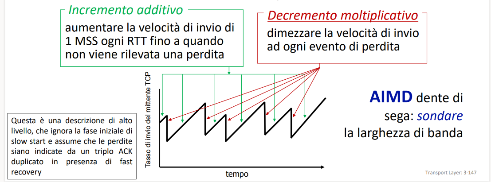
TCP Reno 🌪️
- È un algoritmo che implementa le idee di AIMD
- dimezza quando un triplo ACK 📬 ha lo stesso numero di ACK 📬
- entra poi nella fase di fast recovery(spiego meglio dopo)
- Taglio a 1 MSS quando abbiamo invece una perdita dovuta a un ACK 📬 non ricevuto
- il timeout ⏱️ è scaduto TCP Tahoe è una versione più vecchia e semplice
- dimezza quando un triplo ACK 📬 ha lo stesso numero di ACK 📬
- per qualsiasi perdita toglieva 1 MSS e passava a slow start
attraverso questi algoritmi miglioriamo stabilità e congestione 🌐 generale
Concetto di slow start 🐢💨
- la partenza è con una frequenza bassa di invio
- ma cresce esponenzialmente
- fino a quando non si verifica una perdita
- inizio:
- cwnd=1 MSS
- durante:
- cwnd raddoppiato ad ogni RTT
- perdita:
- riduco gli MSS 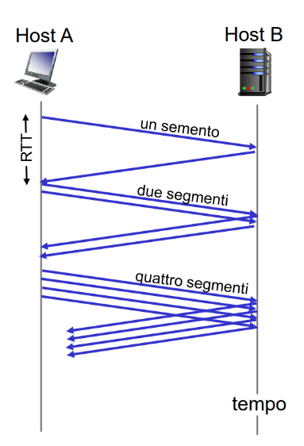
Da esponenziale a lineare 📉➡️📈
- avviene quando il cwnd assume più della metà del suo valore prima del timeout ⏱️
- per aggiustare il tiro viene usata la variabile
sstresh - tiene conto delle perdite per ridurle in futuro
- quando siamo in slow start
cwndcresce - inizialmente
sstresh=64 KB - appena
cwndraggiunge in questo caso64 KB- cresce linearmente
- appena avviene un fault 🚨
sstresh=cwnd/2e- avviene una cosa in base al tipo di fault 🟥 Caso 1: fault tramite timeout ⏱️ (grave)
- quando siamo in slow start
cwnd = 1 MSS→ si riparte da zero (fase di slow start) 🔁 TCP è super prudente: pensa che la rete sia molto congestionata.
🟦 Caso 2: fault dovuto a triplo ACK 📬 duplicato (meno grave, Reno)
ssthresh = cwnd / 2cwnd = ssthresho poco sopra- Entra in fast recovery(vedi tra poco), poi passa alla congestion avoidance
Macchina a stati che chiede all’esame 🧾
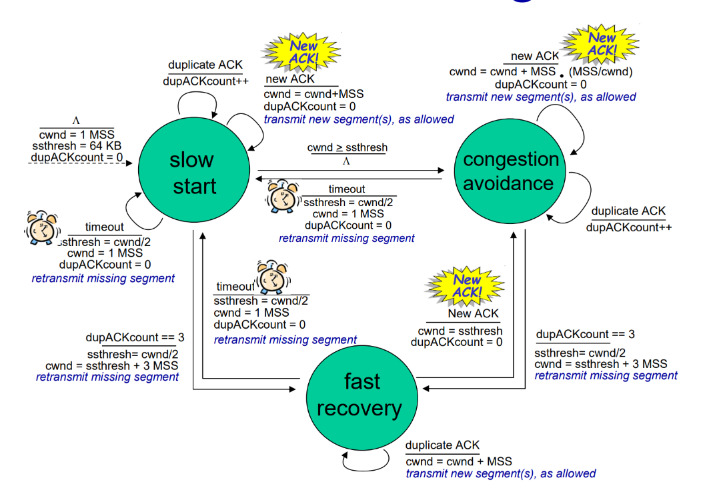
spiegazione(prova a farla da solo prima di leggere qua sotto)
spiegazione falla tra poco
✅ Riassunto: Controllo della Congestione TCP
🔵 1. Quando arriva un nuovo ACK 📬
-
Il mittente può spostare in avanti la sua finestra di invio (scorre verso destra).
-
Questo significa che può inviare nuovi segmenti, perché uno è stato confermato (ACK 📬 ricevuto) e quindi “libera spazio”.
🟢 2. Fase di Congestion Avoidance 🛣️
- La finestra
cwndcresce lentamente, in modo lineare. - Per ogni nuovo ACK 📬 ricevuto:
- In un intero RTT, ci si aspetta un numero di ACK 📬=
- quindi abbiamo un incremento di 1 MSS ad ogni RTT perché si semplificano MSS e cwnd 🔁 Questo è l’incremento additivo dell’AIMD.
🟠 3. Fase di Fast Recovery ⚡
- Scatta dopo un triplo ACK 📬 duplicato (segnale di perdita).
- Il mittente non avanza la finestra finché non arriva un ACK 📬 nuovo.
- Però: per ogni ACK 📬 duplicato, TCP aumenta temporaneamente
cwnd, per poter eventualmente trasmettere un nuovo pacchetto. - un nuovo pacchetto quindi viene inviato circa ogni mezzo RTT
- Appena arriva l’ACK 📬 del segmento perso, si esce dalla fast recovery.
🔴 4. Durata della Fast Recovery ⚡
- tutta la fast dura circa 1 RTT, cioè il tempo necessario affinché l’ACK 📬 del segmento ritrasmesso torni al mittente.
TCP CUBIC 📦🚀
Algoritmo che cerca di sfruttare meglio le bande moderne che sono molto veloci rispetto a TCP Reno che cresceva linearmente, questo cresce di più
- dato un
- che indica la dimensione della finestra di quando è avvenuta una perdita
- quando avviene una perdita si dimezza la velocità di trasmissione ma si ritorna più velocemente a avvicinandosi più lentamente 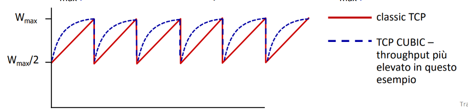 possiamo vedere da questa foto qua sopra come sia molto più veloce Per capire quanto tempo ci metterà per raggiungere la dimensione si usa una variabile
- appena si è lontani da significa che si può andare più veloci
- appena ci si avvicina bisogna essere più cauti perché significa che ci si sta avvicinando al limite
- tutto ciò è calcolato da una funzione cubica che non stiamo a precisare con diversi parametri
- TCP cubic è di default nei server linux il problema di questo TCP è che si raggiunge ogni volta il collo di bottiglia
- si intende che ogni volta si cerca di superare
- invece non si dovrebbe far straripare il buffer foto che fa vedere che il buffer è sempre strapieno e poi si creano problemi di congestione ⚠️ 🌐 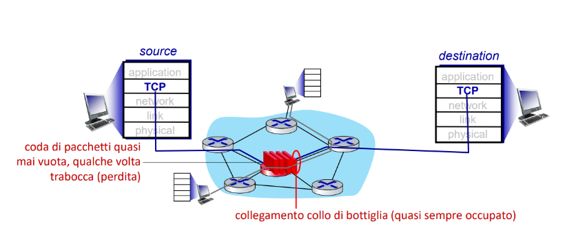
quindi l'obiettivo è quello di tenere il buffer quasi pieno ma mai completamente
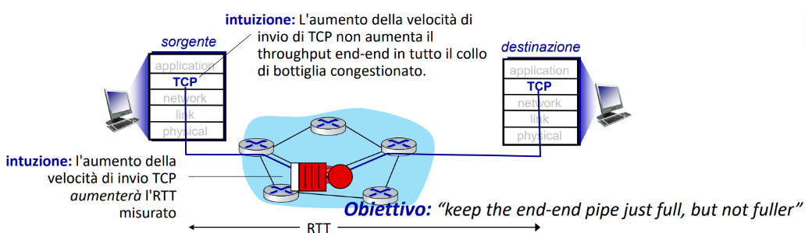
Soluzione: TCP vegas ♠️🎯
TCP Vegas è una evoluzione di CUBIC, cerca sostanzialmente ogni volta di calcolare una stima di quello che può essere il limite per non raggiungerlo mai Sta letteralmente facendo edging Come si fa questa stima? per calcolarla viene
- ogni volta calcolato l’RTT attuale e lo chiama
- confrontato questo attuale con quello minimo rilevato
- non pensare che minimo sia peggio
- minimo significa che ci ha messo poco ritardo
- non pensare che minimo sia peggio
- questa differenza tra i due si calcola perché ci serve per capire se stiamo avendo più ritardo del normale (il min indica una situazione ideale senza congestione 🌐)
successivamente calcola il troughput ideale con e lo confronta con quello reale dovuto a
- Se il throughput reale ≈ quello ideale
- rete libera 🟢
- si può aumentare
cwnd
- Se il throughput reale ≪ quello ideale
- rete congestionata 🔴
- serve ridurre
cwndcon questo metodo
- le perdite non sono forzate
- si massimizza il troughput 🚀
- il ritardo rimane basso
ci sono dei TCP che adottano un approccio basato su ritardi come
- BBR della rete interna di Google 🌐🔍
- sono distribuiti ovvero su larga scala
ECN(Explicit Congestion Notification)
alcune implementazioni di TCP spesso hanno un controllo della congestione 📊🌐 🌐 aiutato dalla rete stessa
- un router di rete imposta due bit ECN che sono nell’intestazione IP
- questi due bit indicano la congestione 🌐
- se li imposto a
10significa che questi bit sono abilitati - se un router rileva congestione 🌐 li mette a
11
- il destinatario non può modificare mai il protocollo TCP però può inviare un ACK 📬 con un bit speciale chiamato
- ECE che se è a
1significa che c’è congestione 🌐
- ECE che se è a
- ECN viene negoziato nella fase di handshake iniziale dove:
- sia mit che dest devono dire: 👉 “Sì, supporto ECN”
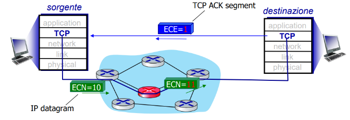
Il TCP è fair?
precisazione su fairness
se ho k connessioni tutte con la stessa banda
- ho equità tra di loro?
- ho un troughput = a
- R è la capacità di rete
- K sono le connessioni 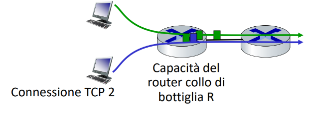
Ora parliamo di questo applicato proprio al TCP: nella foto sottostante abbiamo un esempio con due troughput diversi che lavorano sulla stessa banda alla fine si riesce a vedere che è fair se però le connessioni hanno un equilibrio tipo:
- hanno stesso RTT
- numero di connessioni costante
- tutte le connessioni sono lineari e non sono in slow start(esponenziali)
Invece UDP è fair?
- visto che abbiamo detto che le app video e audio non usano TCP ma UDP per garantire minore latenza poniamoci il dubbio se anche lui è fair
- UDP può essere unfair
- in un caso di banda condivisa può inviare di più a un determinato destinatario
Concetto di TCP paralleli 🪄📶
semplicemente quando apri più schede del browser stai aprendo più connessioni TCP questo trucco può quindi bypassare la fairness perché ti permette di fare più connessioni quindi avere più banda
Come calcolare il troughput medio 🧮📏
semplicemente fai dove
- W dimensione della finestra poco prima di una perdita 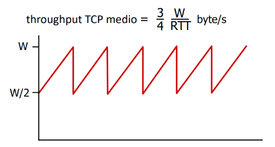
Evoluzioni di TCP e UDP 🧬
- TCP e UDP dominano il trasporto da oltre 40 anni.
- Ma i contesti moderni (cloud, 5G, data center, satellite, ecc.) hanno esigenze molto diverse → servono varianti specializzate di TCP. 📋 Tabella riassuntiva:
| Scenario | Sfida principale |
|---|---|
| Long, fat pipes | Molti pacchetti “in volo” → una perdita interrompe tutto (es. WAN ad alta banda) |
| Reti wireless | Perdita dovuta a rumore/mobilità, ma TCP la interpreta come congestione 🌐 |
| Link ad alto ritardo | RTT altissimi (es. satellite) → risposta lenta, crescita lenta della finestra |
| Data center | Reti con latenza bassissima, ma altissima sensibilità a ogni millisecondo di ritardo |
| Flussi in background | Flussi TCP non prioritari, devono adattarsi senza disturbare gli altri |
| Il TCP ha un problema delle Long, Fat pipes ovvero: |
- pacchetti da inviare lontano (long) (alto RTT)
- e con alta capacità di banda (Fat)(tanti Gbps di banda) Questo problema ci riporta a un esempio che scrivo sotto ma che in sostanza ci fa capire che per raggiungere la banda prefissata dovremmo praticamente avere
- 1 pacchetto perso ogni 5 miliardi 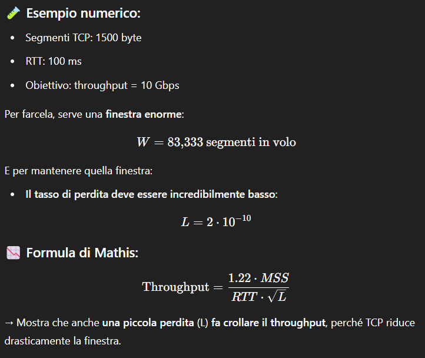 W viene calcolato da:
In questi casi servono varianti di TCP per risolvere il problema:
- TCP BIC, TCP HighSpeed, TCP CUBIC (default in Linux),
- oppure nuove soluzioni come BBR,
- oppure approcci come QUIC sopra UDP.
QUIC 🚀🔗
è un protocollo applicativo che si trova sopra a UDP
- serve per aumentare le performance di HTTP
- usato in app di google e in molti server 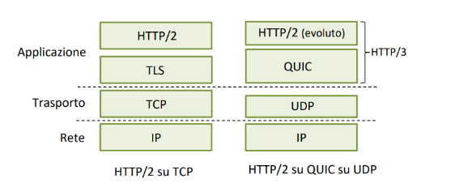
Perché QUIC é meglio?
- QUIC usa algoritmi per fare il controllo degli errori simili a quelli di TCP
- rileva perdite
- regola il flusso
- con un solo handshake(andata-ritorno) stabilisce:
- affidabilità
- controllo della congestione 📊🌐 🌐
- utilizza autenticazioni sicure come TLS
- Consente di fare del multiplexing degli stream
- più flussi simultanei separati
- condividono stesso controllo della congestione 📊🌐 🤝🌐 🌐
- TCP fa schifo rispetto a questo perché TCP soffre di
- head-of-line blocking 🚫📦
- il primo pacchetto mancante blocca tutta la fila dietro.
- se un merdone blocca il cesso è tutto intasato e bloccato
TCP VS QUIC 🥊
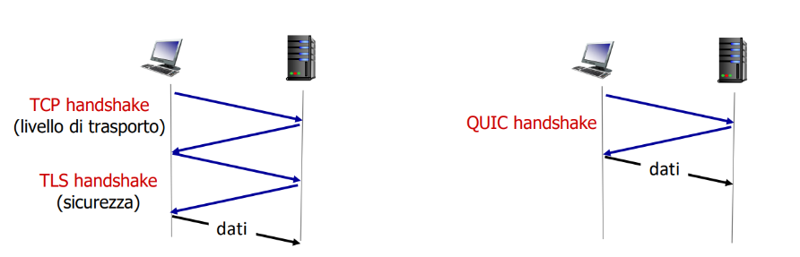 si può vedere una notevole differenza QUIC con un solo handshake fa tutto e può subito iniziare a inviare i dati
Gif che fa vedere che che non c’è HOL blocking, se uno si blocca vanno gli altri 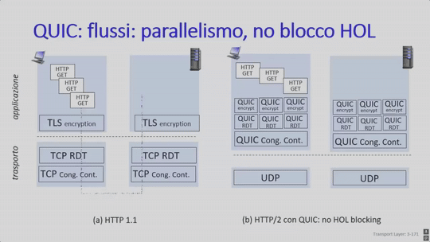